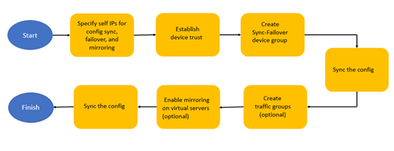

Updated Date: 05/05/2026
Introducing BIG-IP Device Service Clustering
Device service clustering, or DSC, is an underlying architecture within BIG-IP® Traffic Management Operation System® (TMOS®). DSC provides synchronization and failover of BIG-IP configuration data at user-defined levels of granularity, among multiple BIG-IP devices on a network. More specifically, you can configure a BIG-IP device on a network to:
- Synchronize some or all of its configuration data among several BIG-IP devices
- Fail over to one of many available devices
- Mirror connections to a peer device to prevent interruption in service during failover
If you have two BIG-IP devices only, you can create either an active-standby or an active-active configuration. With more than two devices, you can create a configuration in which multiple devices are active and can fail over to one of many, if necessary.
By setting up DSC, you ensure that BIG-IP configuration objects are synchronized and can fail over at useful levels of granularity to the most-available BIG-IP devices on the network. You also ensure that failover from one device to another, when enabled, occurs seamlessly, with minimal to no interruption in application delivery.
Note: If you use the Setup utility to create a DSC configuration, you can re-enter the utility at any time to adjust the configuration. Simply click the F5 logo in the upper-left corner of the BIG-IP Configuration utility, and on the Welcome screen, click Run Config Sync/HA Utility.
Device service clustering (DSC®) is based on a few key components.
- Devices
- A device is a physical BIG-IP® system or a virtual BIG-IP system (BIG-IP Virtual Edition or vCMP® guest). Each device member has a set of unique identification properties that the BIG-IP system generates. For device groups configured for failover, it is important that the device with the smallest capacity has the capacity to process all traffic groups. This ensures application availability in the event that all but one device in the device group become unavailable for any reason.
- Device groups
- A device group is a collection of BIG-IP devices that trust each other and can synchronize, and sometimes fail over, their BIG-IP configuration data. A Sync-Failover device group contains devices that synchronize configuration data and support traffic groups for failover purposes when a device becomes unavailable. The BIG-IP system supports either homogeneous or heterogeneous hardware platforms within a device group.
Important: BIG-IP module provisioning must be equivalent on all devices within a device group. For example, module provisioning is equivalent when all device group members are provisioned to run BIG-IP® Local Traffic Manager (LTM) and BIG-IP® Application Security Manager™ (ASM™) only. Maintaining equivalent module provisioning on all devices ensures that any device in the device group can process module-specific application traffic in the event of failover from another device.
- Traffic groups
- A traffic group is a collection of related configuration objects (such as a virtual IP address and a self IP address) that run on a BIG-IP device and process a particular type of application traffic. When a BIG-IP device becomes unavailable, a traffic group can float to another device in a device group to ensure that application traffic continues to be processed with little to no interruption in service.
- Device trust and trust domains
- Underlying the success of device groups and traffic groups is a feature known as device trust. Device trust establishes trust relationships between BIG-IP devices on the network, through mutual certificate-based authentication. A trust domain is a collection of BIG-IP devices that trust one another and is a prerequisite for creating a device group for config sync and failover operations. The trust domain is represented by a special system-generated and system-managed device group named
device_trust_group, which is used to synchronize trust domain information across all devices. - Folders
- Folders are containers for the configuration objects on a BIG-IP device. For every administrative partition on the BIG-IP system, there is a high-level folder. At the highest level of the folder hierarchy is a folder named
root. The BIG-IP system uses folders to affect the level of granularity to which it synchronizes configuration data to other devices in the device group.
This flowchart shows the general sequence of configuration tasks to perform to set up high availability with a Sync-Failover device group.
